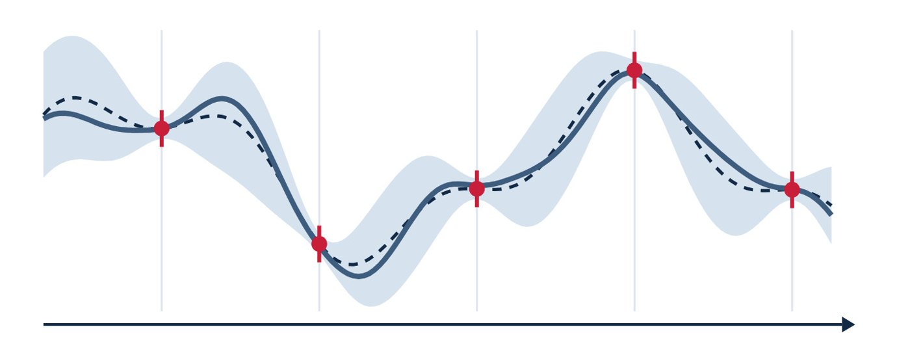
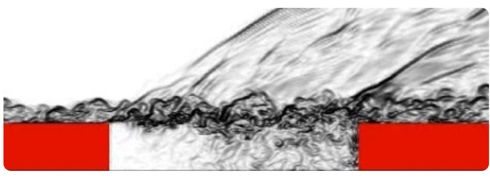
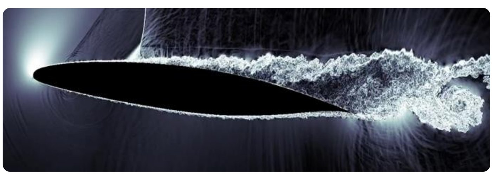

A cyber-physical laboratory for turbulence
Experiments, simulations and models exchanging self-correcting information about the same flow, through a hierarchy of interacting digital twins, for a more complete and less uncertain observation of turbulence.
Seeing turbulence through three lenses at once
From aircraft and fusion reactors to blood flow and climate, turbulence limits what we can predict, optimise and control. Its vast range of interacting scales, its stochastic behaviour and its chaotic sensitivity put it beyond the reach of experiment, simulation or modelling taken separately.
The DISTURB answer: a hierarchy of three digital twins
State-of-the-art data assimilation couples the pillars so that each corrects the others: measurement sparsity and noise are compensated by numerical precision, computational simplifications are corrected by experimental data, and model deficiencies are constrained by both.

Fidelity
Exascale simulation synchronised with high-resolution measurements: reconstructs what experiments cannot measure and what simulations cannot know.
Agility
Reduced-order twins distilled from DT1: reveal mechanisms, quantify uncertainty and the trade-off between cost and fidelity.
Action
A real-time twin synchronised with the experiment: tracks the flow, forecasts rare events and regime changes, and drives reactive control.
Three canonical flows, in water and in air

Turbulent jet · amplifier
Re ~106, subsonic to supersonic, dynamics and sound: wave packets, loud events, screech mode switching.

Open cavity · oscillator
Re 103–105: Rossiter tones, mode coupling, broadband–tonal intermittency.

Airfoil · both, with pitch & plunge
Re 103–4×105: separation, fluid–structure interaction, flapping control.
Three sites, three pillars
- Laurent David
- Ludovic Chatellier
- Jacques Borée
- Vincent Jaunet
- Eduardo Martini
- Damien Eysseric
- Anton Lebedev
- Andrew Stuart (Caltech)
- Jane Bae (Caltech)
- Aaron Towne (University of Michigan)
News
DISTURB awarded an ERC Synergy Grant
The European Research Council has awarded €9.9 M to DISTURB, a six-year collaboration between Institut Pprime (CNRS), Sapienza Università di Roma and Caltech. The project starts in 2027.